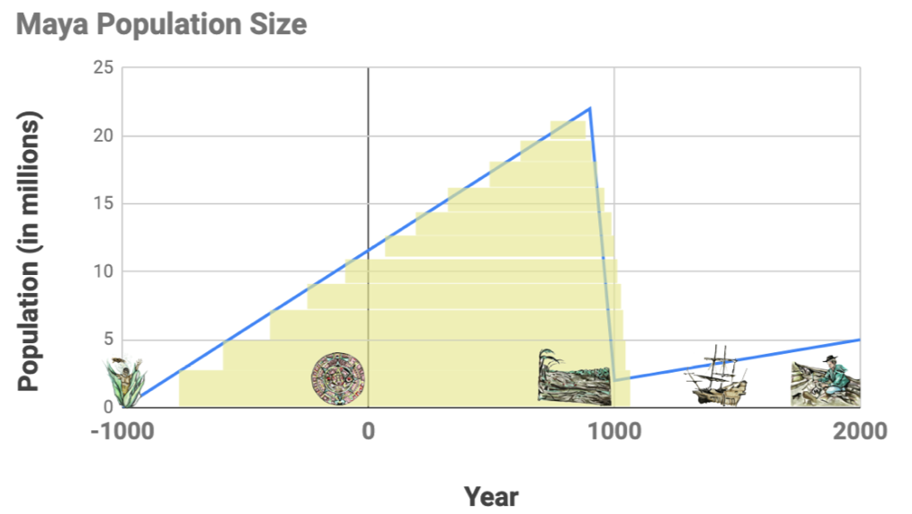

{kind=link}
(Images from L -> R: corn, Maya calendar, forests being cut down for farming, Spanish ship, modern archaeologist)
1 About how big was the Maya population at its peak? over 20 million people
2 For about how many years did the Maya civilization thrive? about 1900 years (from 1000 BCE to 900 AD)
Year |
Event |
Possible Significance for the Maya |
1000 BCE |
Maya myth tells that man was created from an ear of corn. |
|
Centuries after Maya origins |
Maya civilization thrives, with impressive advances like a very scientific calendar. |
|
Century before 1000 AD |
Maya population begins to decline! Why?! |
|
Shortly after 1500 AD |
Spanish arrive to conquer the remaining Maya people, who now live in rural, country areas because cities are gone. They write first accounts about the Maya. |
|
Around 2000 AD |
Archaeologists study Mayan bones to try to learn more about their ancient civilization. |
3 Knowing what you know about the Maya based on some significant events in their history, what do you think are some possible reasons as to why the Maya civilization declined so suddenly?
These materials were developed partly through support of the National Science Foundation,
(awards 1042210, 1535276, 1648684, and 1738598).  Bootstrap by the Bootstrap Community is licensed under a Creative Commons 4.0 Unported License. This license does not grant permission to run training or professional development. Offering training or professional development with materials substantially derived from Bootstrap must be approved in writing by a Bootstrap Director. Permissions beyond the scope of this license, such as to run training, may be available by contacting contact@BootstrapWorld.org.
Bootstrap by the Bootstrap Community is licensed under a Creative Commons 4.0 Unported License. This license does not grant permission to run training or professional development. Offering training or professional development with materials substantially derived from Bootstrap must be approved in writing by a Bootstrap Director. Permissions beyond the scope of this license, such as to run training, may be available by contacting contact@BootstrapWorld.org.